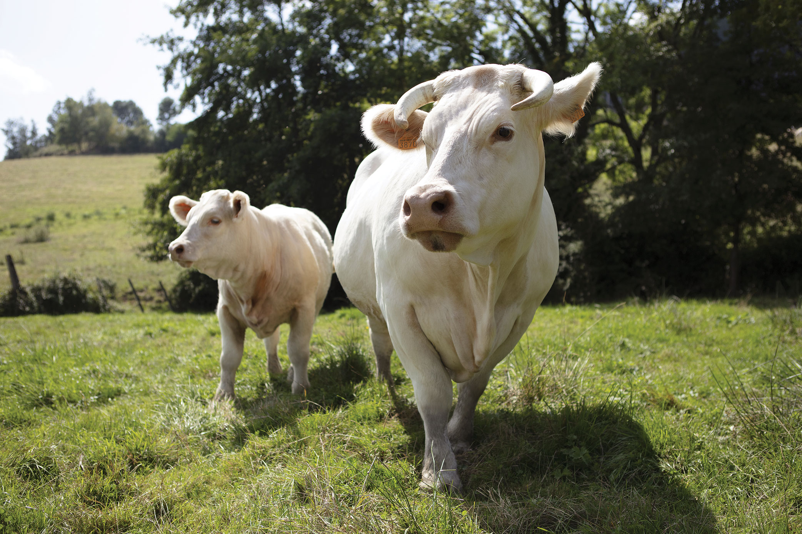
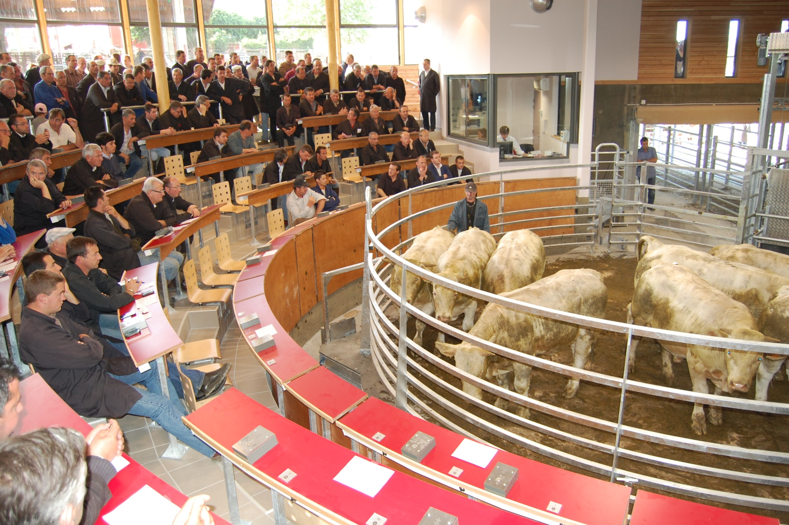

Des produits locaux
A la tour d'Auvergne, nous croyons en la qualité des produits locaux. C'est pourquoi nous nous
approvisionnons auprès de producteurs locaux pour offrir à nos clients des plats frais et savoureux.
Nous sommes particulièrement fiers de notre viande charolaise, achetée au marché de Saint Christophe
en Brionnais.

De la viande d'une grande qualité
Cette viande est réputée pour sa qualité exceptionnelle, sa saveur délicieuse et sa tendreté
inégalée. Nous utilisons cette viande pour créer des plats délicieux et équilibrés, en les mariant
avec des légumes et des herbes fraîches de notre région. Nous sommes convaincus que nos clients
apprécieront la qualité de notre cuisine et le goût authentique des produits locaux que nous
servons.
